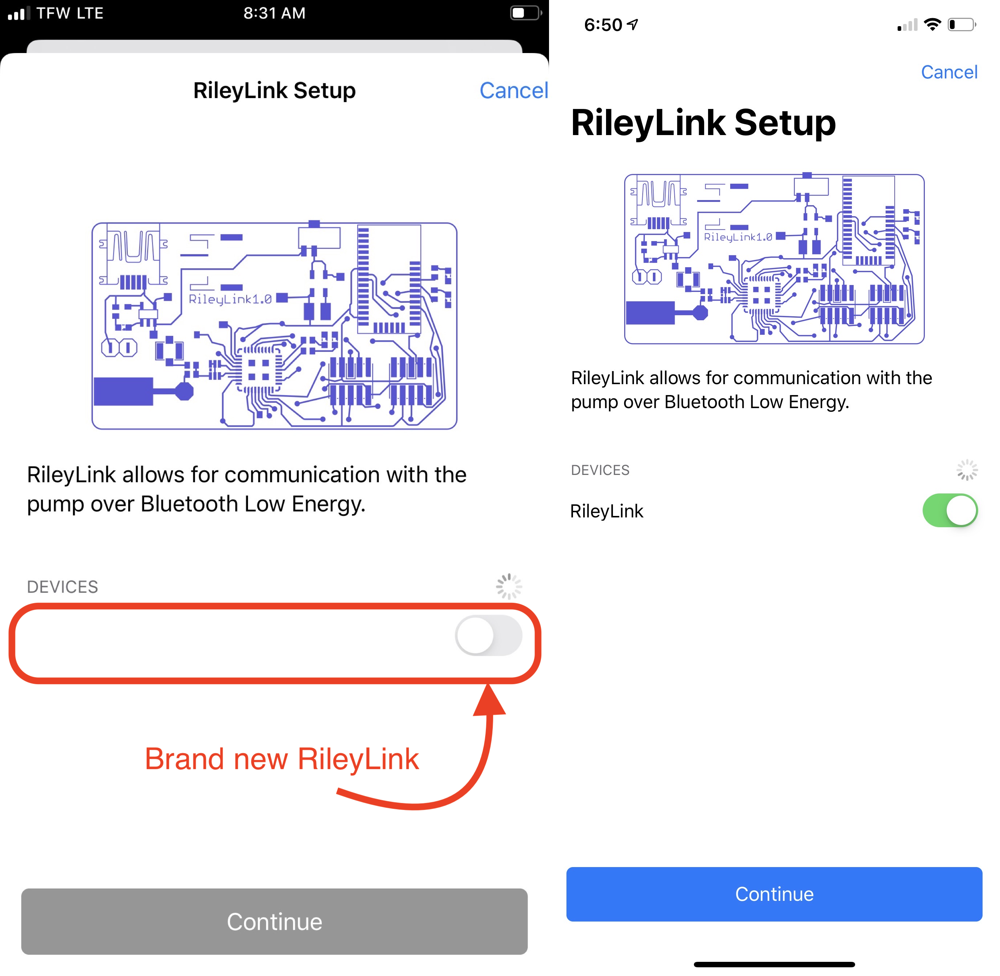

Loop 2 Add Medtronic
Medtronic Pump Users¶
Your Loop app will have a lot of blank spots until you input some basic settings. The beginning step is to add a pump to your Loop app. If you are using an Medtronic pump, you can follow along for the rest of this page. If you are using an Omnipod pump, please head over to Loop 2 Add Omnipod instead.
Prepare Medtronic Pump¶
Before you begin the rest of the setup process, there are several steps on your Medtronic pump that you will need to complete prior to moving on with Loop setup. DO NOT SKIP THESE STEPS OR YOUR LOOP WILL NOT WORK.
- Turn off Patterns under the basal menu settings. This will force Loop to use your "Standard" basal rate schedule.
- Make sure your standard basal rate schedule is up-to-date and accurate. Loop will automatically import your pump's existing standard basal rate schedule when you add your pump in the subsequent parts of this page. If you change basal rates later...make sure to make those changes in the Loop app and use Loop to save the changes back to the pump. If you make changes directly in the pump, Loop will not automatically know about those changes and you will cause a mismatch.
- Set your pump's
Temp Basal TypetoInsulin Rate (U/hr). Do NOT use percentage. Your Loop will not run unless your temp basal type is set to units/hour. - Make sure your maximum basal rate and maximum bolus (those are particular settings in the pump) are reasonably set for your particular needs. For new Loop users, a maximum basal rate equal to approximately 2-4 times your highest scheduled basal rate is a good starting point as you learn Loop and dial in your other settings. You can adjust as your comfort and use of Loop develop.
- Set Remote Devices to
ONand enter any random ID (010101 will work - avoid using all zeros). This setting is found in the pump's Utilities menu (for x23 continue to Connect Devices, Remotes) and turnONthe Remote Options. - Cancel any currently running extended or dual wave boluses. Loop cannot loop with those running.
- Make sure the other settings in your pump, such as bolus wizard settings, are up-to-date so that if you stop using Loop, those settings will be accurate for non-Loop traditional pump use.
Select Pump Type¶
Let’s start by clicking on the Loop Settings button in the tool bar at the bottom of your Loop app. It looks like a little sprocket. On the settings screen that opens, click on Add Pump and select the Medtronic pump option that appears.

Connect Pump to Loop¶
New RileyLink compatible devices won't have a name listed next to their slider at first. The name will only be displayed after connecting the device to Loop for the first time. So, if all you see in the device list is a little toggle and no "RileyLink" name...go ahead and switch that toggle. The default device name will appear after that toggle is green.
You can later personalize the default device name once it is connected to Loop.

Continue with these steps to connect your Medtronic pump to Loop.
- Make sure your RileyLink is turned on and nearby, then you will see a RileyLink listed in this area of the settings. Actually, you will see a list of any RileyLinks that are in the nearby area. Slide on the toggle for just one RileyLink.
- Add your pump's region, color, and serial number.
- Note that some Canadian pumps use
CMinstead ofCAfor the region code. Just selectCAin the dropdown menu.
- Note that some Canadian pumps use
- Click the
Continuebutton to finish the addition of your pump.

For x23 and x54 Medtronic pump users only
 |
For x23 and x54 Medtronic pump users, there is a packet of information special to those pumps called MySentry messages. If you have never setup this part of the pump previously, you may see a screen, called "Pump Broadcasts", at this point in the setup process.Follow the directions on the screen. They will require you to take some manual steps on your pump to "pair" it with your Loop app.Basically, you will need to go to your pump's main menu, scroll down to Utilities, then Connect Devices, then Other Devices, turn that setting On, and then select Find Device. Once you do that, click on the Continue button in Loop app and the pairing will take place. This will allow those MySentry packets of information to flow to Loop app.This step does not apply for x22 or x15 pump users, since those pumps do not have MySentry capabilities. |
Now that your pump is paired with Loop, you will be finishing these steps:
- Change your pump time using the Loop app (and read all the info on that screen)
- Import your pump's basal rate schedule, maximum basal rate, and maximum bolus (maximums are collectively called "delivery limits" in Loop)
- Select your pump's battery type (lithium or alkaline)
- Leave the Preferred Data Source on Event History
Event History must be selected for Nightscout to display temp basals, carbs, and boluses from Loop. Event History must also be selected in order for prime events to be detected and NOT contribute to IOB during site changes. Please just leave the Preferred Data Source on Event History.

Change Time Zone¶
Loop automatically prompts you to set your pump time using the Loop app as part of initial Loop setup. There will be other times you need to change the time - traveling or daylight savings time start and end. It is important that you use Loop to change time on your pump; do not adjust time on your pump directly once it is attached to Loop.
If you are traveling through time zones, Loop continues to work - just be aware that your basal rate and other configuration settings will be in the original time zone. To change time zones, please follow the Change Time Zone instructions.
Always use the Loop -> Pump -> Change Time command to change pump time. Do not use the Medtronic pump menus to change your pump's time when Looping.
Next Step: Add CGM¶
Congrats! You've added your Medtronic pump to your Loop app. Now, click on the settings button in the upper left corner to take you back to Loop's settings menu. Your next step is to Loop 2 Add CGM to your Loop app. After all, without CGM data, your Loop won't loop.